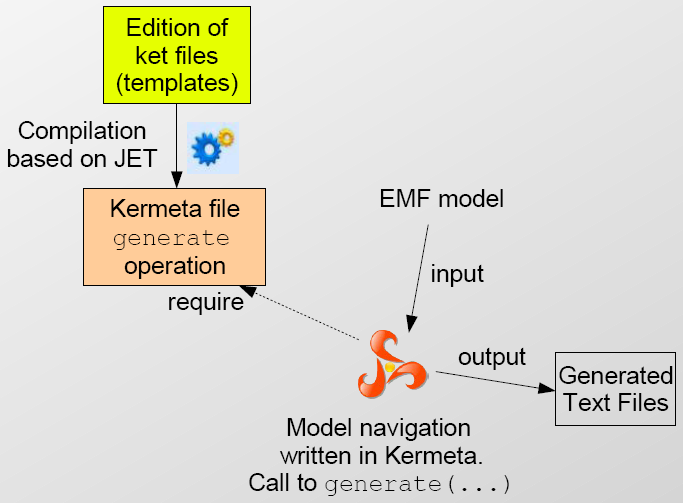

KET is a template engine it cannot be used to parse text (contrary to tools like Sintaks)
The best cases where using KET is efficient is when the templates contains more text that expressions. Ie. A text with holes. If you have more expressions than text, you should consider writing a pretty printer directly in Kermeta.
Your template file should be *.ket.
Next with a right click you can transform it as a kmt file. You can call the operation generate method on the generated class.
It returns a String that contains the generated code.

Ket process.